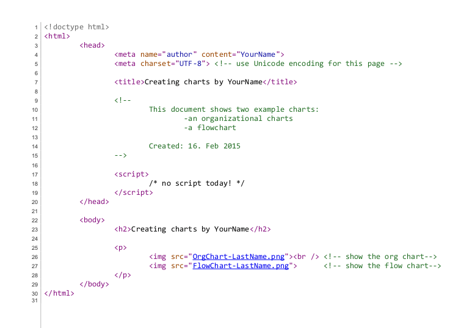

Saving your work
Open your editor and save the empty document as "1.07S-CreatingCharts-LastName.html" in your Computer Programming 12 directory.
The assignment
Charts are usually used to help plan the structure of computer programs.
The temptation for beginning programmers is to simply jump in and keep hacking away at a problem until you get something that works. However, for medium or larger problems this is a recipe for crappy, muddled code that is difficult to expland or maintain.
Charting problems gives you the clarity of mind you need to create clear, clean code.
But how do you create charts?
Creating the HTML file to contain the charts
Today you will create two charts images, and a webpage to contain them.
Let's start off with the webpage, shall we?
Please enter the following code into the document you opened above:

Creating the organizational chart
Go to draw.io and create a new diagram called OrgChart-LastName.
Choose to save it in your browser.
Use the shapes and line connectors to create the exact chart that you see here:

When you are done, it is time to save your chart.
- Choose
File→Save. - Then choose
File→Download as...→Portable Network Graphics (.png). - Find the graphics file you created and drop it into your
Computer Programming 12folder on yourH:/drive.
Creating the flowchart
Now go to File → New... and create a new diagram called FlowChart-LastName.
Choose to save it in your browser.
Use the shapes and line connectors to create the exact chart that you see here:

When you are done, it is time to save your chart.
- Choose
File→Save. - Then choose
File→Download as...→Portable Network Graphics (.png). - Find the graphics file you created and drop it into your
Computer Programming 12folder on yourH:/drive.
Test the whole package
Load the HTML file you created in a browser to see if everything works. If you have followed directions carefully, the links to the charts should work just fine. If not, you have some troubleshooting to do. In particular, make sure the HTML files and images are all together in the same directory.
Handing it in
Drop all three files (the html file and the two images) into the PassIn folder for your teacher.
Extend and expand
A quick Google image search for "flowchart parody" will give you plenty of ideas of fun things to make. Be kind and professional!